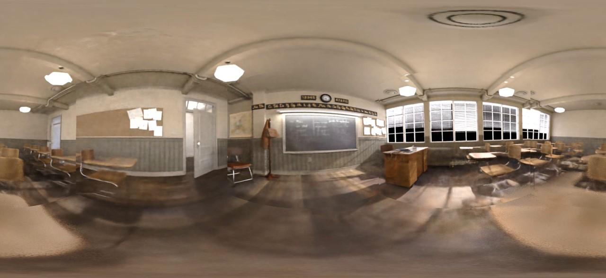

SC-OmniGS:
Self-Calibrating Omnidirectional Gaussian Splatting
Huajian Huang*1, Yingshu Chen*1, Longwei Li2, Hui Cheng2, Tristan Braud1, Yajie Zhao3 and Sai-Kit Yeung1
1The Hong Kong University of Science and Technology,
2Sun Yat-sen University,
3Institute for Creative Technologies, University of Southern California
* equal contribution
ICLR 2025
TL;DR SC-OmniGS jointly calibrates omnidirectional camera intrinsics and extrinsics to recover fine-grained 3D Gaussians.
Training process. Self-calibrating cameras with no pose prior.
Abstract
360-degree cameras streamline data collection for radiance field 3D reconstruction by capturing comprehensive scene data. However, traditional radiance field methods do not address the specific challenges inherent to 360-degree images. We present SC-OmniGS, a novel self-calibrating omnidirectional Gaussian splatting system for fast and accurate omnidirectional radiance field reconstruction using 360-degree images. Rather than converting 360-degree images to cube maps and performing perspective image calibration, we treat 360-degree images as a whole sphere and derive a mathematical framework that enables direct omnidirectional camera pose calibration accompanied by 3D Gaussians optimization. Furthermore, we introduce a differentiable omnidirectional camera model in order to rectify the distortion of real-world data for performance enhancement. Overall, the omnidirectional camera intrinsic model, extrinsic poses, and 3D Gaussians are jointly optimized by minimizing weighted spherical photometric loss. Extensive experiments have demonstrated that our proposed SC-OmniGS is able to recover a high-quality radiance field from noisy camera poses or even no pose prior in challenging scenarios characterized by wide baselines and non-object-centric configurations. The noticeable performance gain in the real-world dataset captured by consumer-grade omnidirectional cameras verifies the effectiveness of our general omnidirectional camera model in reducing the distortion of 360-degree images.
How it works
1. Overview of SC-OmniGS Optimization Flow
SC-OmniGS is a self-calibrating framework for omnidirectional radiance field reconstruction.
It takes multiple 360-degree images without pose information or with noisy pose estimations as input to recover a fine-grained omnidirectional radiance field.
We adopt 3D-GS as the radiance field representation to achieve fast reconstruction and real-time novel view rendering.
Similar to 3D-GS, we initialize the 3D Gaussians from coarse points input obtained from SfM estimation or an omnidirectional depth map.
We then jointly optimize 3D Gaussians, the omnidirectional camera model, and poses.
2. Differentiable Omnidirectional Camera Model
The generic omnidirectional camera model comprises a frozen unit
sphere and trainable focal length coefficient and angle distortion coefficients.
It learns complex distorting patterns through differentiable optimization.
Results
Reconstruction Comparisons
Panorama comparisons


